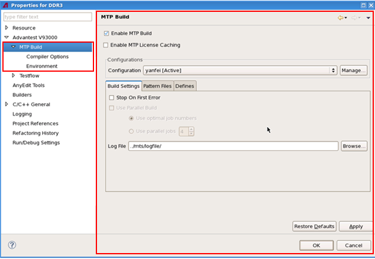
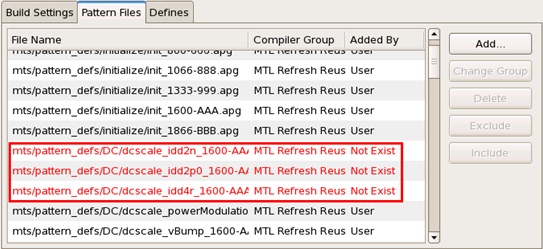

The MTP build configuration pages
The MTP build configuration pages let you set up build configurations for MTP .apg files.
To set up a build configuration, you need to fill in three configuration pages, listed in the left box of the following picture:
- MTP Build: Creates build configurations, see "The MTP Build page" in this topic.
- Compiler Options: Sets up compiler options for specific build configurations.
- Environment: Sets up environment variables for
specific build configurations.Note To access these pages, see Accessing the MTP build configuration pages.

The MTP Build page
It lets you create build configurations for MTP .apg files.
As the above picture displays, the MTP Build page contains:
- Enable MTP Build: You must check it to build and run MTP device
projects. Otherwise, you cannot use the MTP build and run functions on the MTP-EWC.
This option is selected automatically for MTP device projects.
Deselecting this option will disable all options on the MTP build pages and will check the MTP license back to the license server.
- Enable MTP License Caching: Selecting this option checks out the MTP
license from the license server immediately. Clearing this option checks in the MTP license
back to the license server immediately. The console shows the license check
information.
Checking out the license results in the license being cached on your system controller, which provides the following benefits:
- It greatly speeds up the license check, especially when the license server is remote.
- It prevent users of other system controllers from using this license until you return the
license to the server.
To return the license, clear the selection.
If Enable MTP License Caching is selected, on SmarTest startup, the MTP license is checked out from the license server automatically.
On SmarTest shutdown, the MTP license is automatically checked in to the license server. For details, see The System .lic license files.
- Configuration: Lets you select an existing build configuration. To
create, delete, rename or activate a build configuration, click
Manage... (see below).
A default configuration, "Default", is provide. It defines only one compiler group "Default" and applies it to all .apg files in the current device. You can modify its settings except:
- Delete or rename this configuration.
- Delete or rename the compiler group.
- Add new compiler groups.
- Add or remove .apg files.
If you do not have other configurations, this configuration becomes the active configuration for you.
- Manage...: Lets you create, activate, rename or delete build
configurations.
When creating a new configuration, this function allows you to copy the setups of another build configuration.
- Build Settings: This tab lets you set up the build conditions for the
configuration specified in the Configuration field.
On this tab, there are two items:
- Stop On First Error: Checking it will stop the build process when a compilation error appears.
- Log File: Lets you save the build information in a desired file.
The default file is: ../mts/logfile/.
- Pattern Files: This tab lists the .apg files and their belonged
compiler groups in the configuration specified in the Configuration
field, and allows you to add or delete .apg files from the configuration. When the .apg files
do not exist in the original folders, they will become red and indicate Not Exist on the tab.

Buttons on the tab are:
- Add...: Adds the .apg files to the build configuration.
When adding the .apg files, you need to select compiler groups for them. The default group is Default.
If you have not created any compiler groups with the Compiler Option page, the Default group applies to the .apg files.
- Change Group: If you have already created compiler groups with the Compiler Option page, you can change the compiler groups for the selected .apg files.
- Delete: Deletes the selected .apg files.
- Exclude: Excludes the selected .apg files from the build configuration. The excluded files become greyed out.
- Include: Includes the excluded files back.
- Add...: Adds the .apg files to the build configuration.
- Defines: This tab lets you create, edit or delete string macros and their values (they are used for the MTL :defines:) for the build configuration specified in the Configuration field.
Functional changes
- Introduced in MTP 3.2.1
- MTP 3.2.2: Adds a new option "Enable MTP License Caching" on the MTP Build page.
- MTP 3.3.2: The MTP Build page provides a default configuration, "Default".
- MTP 3.3.2: The Pattern Files tab is enhanced to be able to label the .apg files as they are no longer in the original folders.